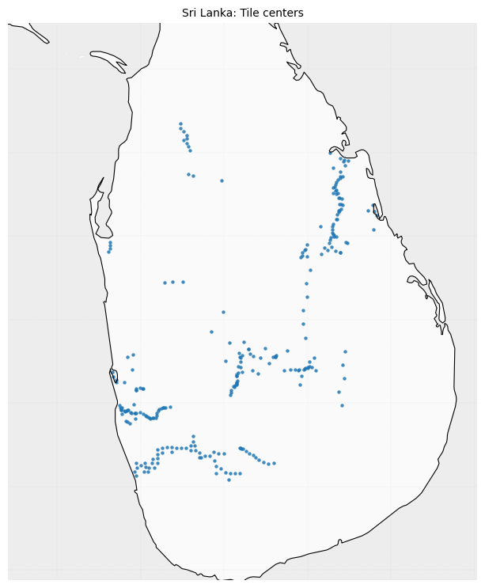

Weekly Progress
Week 10 - Project Progress
This week focused on dataset auditing, Sri Lanka coverage review, and event-specific GEE export templates for tsunami and wildfire scenarios.
At a glance
Audit and template preparation
Core progress from dataset review, coverage mapping, and exporter design.
What I completed
- Audited the current dataset and checked spatial spread.
- Mapped Sri Lanka tile centers to identify dense and sparse zones.
- Prepared dedicated GEE export templates for tsunami and wildfire events.
- Reviewed Scientific Data papers to improve release documentation quality.
Current coverage
Current snapshot includes 272 images collected across Sri Lanka.

Template design
GEE exporters by hazard type
Windows and selection logic were separated to fit tsunami and wildfire dynamics.
Event windows
| Event Type | BEFORE Window | ON Window | AFTER Window |
|---|---|---|---|
| Tsunami | -120 to -30 days | 0 to +10 days (fallback: +30, +60) | +30 to +120 days |
| Wildfire | -90 to -14 days | 0 to +5 days (fallback: +14, +30) | +30 to +120 days |
Tsunami template (reduced)
// TSUNAMI template (reduced)
var targetDate = ee.Date('2018-09-28');
var beforeWindow = [-120, -30];
var onWindows = [10, 30, 60];
var afterWindow = [30, 120];
// Join S2 SR with cloud probability, pick BEFORE/ON/AFTER, export RGB8 + MSI13.
// Full fallback and index-matching logic remains in the full script version.Wildfire template (reduced)
// WILDFIRE template (reduced)
var targetDate = ee.Date('2023-08-08');
var beforeWindow = [-90, -14];
var onWindows = [5, 14, 30];
var afterWindow = [30, 120];
// ON selection adds a simple haze proxy (low B2 mean preferred).
// Export format matches tsunami pipeline for consistent packaging.Paper study
Scientific Data lessons applied
Reading notes translated into concrete dataset release improvements.
Key takeaways
- Present a clear dataset motivation and intended benchmark use.
- Document the pipeline end-to-end with transparent metadata fields.
- Define reproducible splits and evaluation metrics from the start.
- State known limitations and sampling bias explicitly.
Paper mapping
| Paper | Why it was useful | Practice adopted |
|---|---|---|
| paper1.pdf | Large-scale spatio-temporal dataset presentation style. | Workflow figure + metadata + baseline section. |
| paper2.pdf | Hazard-focused annotation and evaluation structure. | Clear split protocol and benchmark reporting format. |